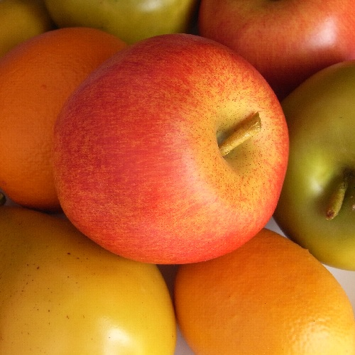

Now try dooding over below image with same tool:

Drawings do not block clicking on any HTML links as well. Try this!
There exists a lot of drawing libraries for drawing over web pages and images, but this is just a new approach to be able to keep the webpage alive along with the drawings.
Also, this drawing approach creates HTML elements lastly as drawings and removes the Canvas element. So can add actions on these drawings as we can add on normal HTML elements.
Hence,
To Do items for the development are:
-
Color change option
-
Auto-close figure option
-
Highlight selected text
-
Drag and reposition option on each drawing
-
Copy and Delete option on each drawing, etc.
If you have any suggestions or wish to contribute, please log/contribute to
the
Github repository.
Thank you!